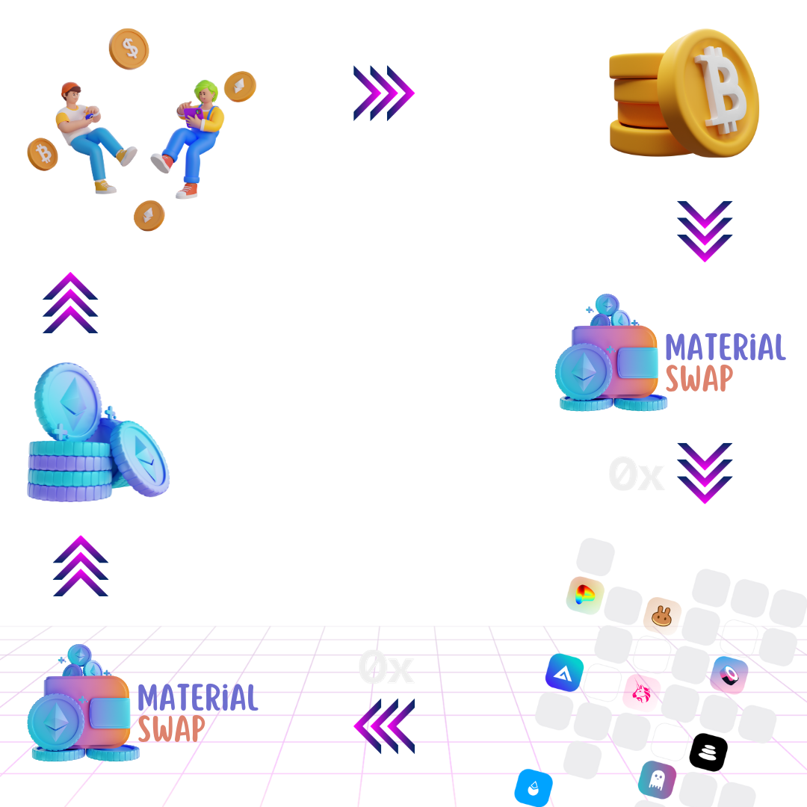

<div #swap class="container-fluid swap-container">
  <div class="row">
    <div class="col-12 swap-wrapper">
      <div class="row">
        <div class="col-12 swap-top">
          <div class="row h-100">
            <div class="col-6">
              <h5 class="ps-2">Swap</h5>
            </div>
            <div class="col-6 d-flex justify-content-end svg-cont">
              <a (click)="openLg(content)">
                <svg width="50px" height="50px" viewBox="0 0 24 24" fill="none" xmlns="http://www.w3.org/2000/svg">
                  <g id="SVGRepo_bgCarrier" stroke-width="0"></g>
                  <g id="SVGRepo_tracerCarrier" stroke-linecap="round" stroke-linejoin="round"></g>
                  <g id="SVGRepo_iconCarrier">
                    <path fill-rule="evenodd" clip-rule="evenodd"
                      d="M22 12C22 17.5228 17.5228 22 12 22C6.47715 22 2 17.5228 2 12C2 6.47715 6.47715 2 12 2C17.5228 2 22 6.47715 22 12ZM12 17.75C12.4142 17.75 12.75 17.4142 12.75 17V11C12.75 10.5858 12.4142 10.25 12 10.25C11.5858 10.25 11.25 10.5858 11.25 11V17C11.25 17.4142 11.5858 17.75 12 17.75ZM12 7C12.5523 7 13 7.44772 13 8C13 8.55228 12.5523 9 12 9C11.4477 9 11 8.55228 11 8C11 7.44772 11.4477 7 12 7Z"
                      fill="#000000"></path>
                  </g>
                </svg>
              </a>
            </div>
          </div>
        </div>
        <div class="col-12 swap-from">
          <div class="row">
            <div class="col-12 d-flex align-items-center">
            </div>
            <div class="col-12">
              <div class="row">
                <div class="col-6">
                  <div class="group input-from ms-3">
                    <input #inputFrom type="text" required [(ngModel)]="inputValue"
                      (ngModelChange)="onInputChange($event)">
                    <span class="highlight"></span>
                    <span class="bar"></span>
                    <label>You pay</label>
                  </div>

                </div>
                <div class="col-6 d-flex justify-content-end align-items-center">
                  <select class="select-from form-select form-select-lg" aria-label="Large select example"
                    [(ngModel)]="selectedItemFrom" (ngModelChange)="onSelectFromChange($event)">
                    <ng-container *ngFor="let item of cryptosList">
                      <option class="options-from" *ngIf="hasNetworkWithTokenAddress(item, networkSwappable!)"
                        [value]="item | json">{{ item.name }}</option>
                    </ng-container>
                  </select>
                </div>
              </div>
            </div>
          </div>
        </div>
        <div class="col-12 swap-to">
          <div class="row">
            <div class="col-12 d-flex align-items-center">
            </div>
            <div class="col-12">
              <div class="row">
                <div class="col-6 d-flex align-items-center">
                  <span class="outputTo ms-3">
                    0
                  </span>
                </div>
                <div class="col-6 d-flex justify-content-end align-items-center">
                  <select class="select-to form-select form-select-lg" aria-label="Large select example"
                    [(ngModel)]="selectedItemTo" (ngModelChange)="onSelectToChange($event)" disabled>
                    <ng-container *ngFor="let item of cryptosList">
                      <option class="options-to" *ngIf="hasNetworkWithTokenAddress(item, networkSwappable!)"
                        [value]="item | json">{{ item.name }}</option>
                    </ng-container>
                  </select>
                </div>
              </div>
            </div>
          </div>
        </div>
        <div class="col-12 swap-btn pb-2">
          <button #btnConnectSwap class="btn btn-primary w-100" *ngIf="!walletLogged"
            (click)="connectMetamask()">Connect</button>
          <button #btnConnectSwap class="btn btn-primary w-100" *ngIf="walletLogged"
            (click)="trySwap(this.amount, this.currentCryptoFrom.tokenAddress, this.currentCryptoTo.tokenAddress, this.targetUrlToFetch$)">Swap</button>
        </div>
      </div>
    </div>
  </div>
</div>

<ng-template #content let-modal>
  <div class="modal-header">
    <h4 class="modal-title text-light">Material Swap & 0x Protocol</h4>
    <button type="button" class="btn" aria-label="Close" (click)="modal.dismiss('Cross click')">
      <svg width="30px" height="30px" viewBox="0 0 24 24" fill="none" xmlns="http://www.w3.org/2000/svg">
        <g id="SVGRepo_bgCarrier" stroke-width="0"></g>
        <g id="SVGRepo_tracerCarrier" stroke-linecap="round" stroke-linejoin="round"></g>
        <g id="SVGRepo_iconCarrier">
          <g clip-path="url(#clip0_429_11083)">
            <path d="M7 7.00006L17 17.0001M7 17.0001L17 7.00006" stroke="#ffffff" stroke-width="2.5"
              stroke-linecap="round" stroke-linejoin="round"></path>
          </g>
          <defs>
            <clipPath id="clip0_429_11083">
              <rect width="24" height="24" fill="white"></rect>
            </clipPath>
          </defs>
        </g>
      </svg>
    </button>
  </div>
  <div class="modal-body">
    
  </div>
</ng-template>
